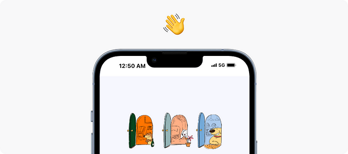
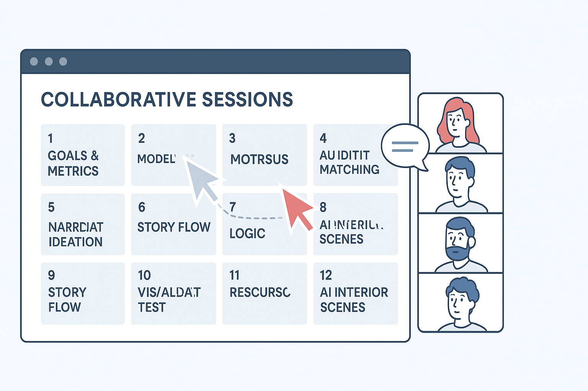
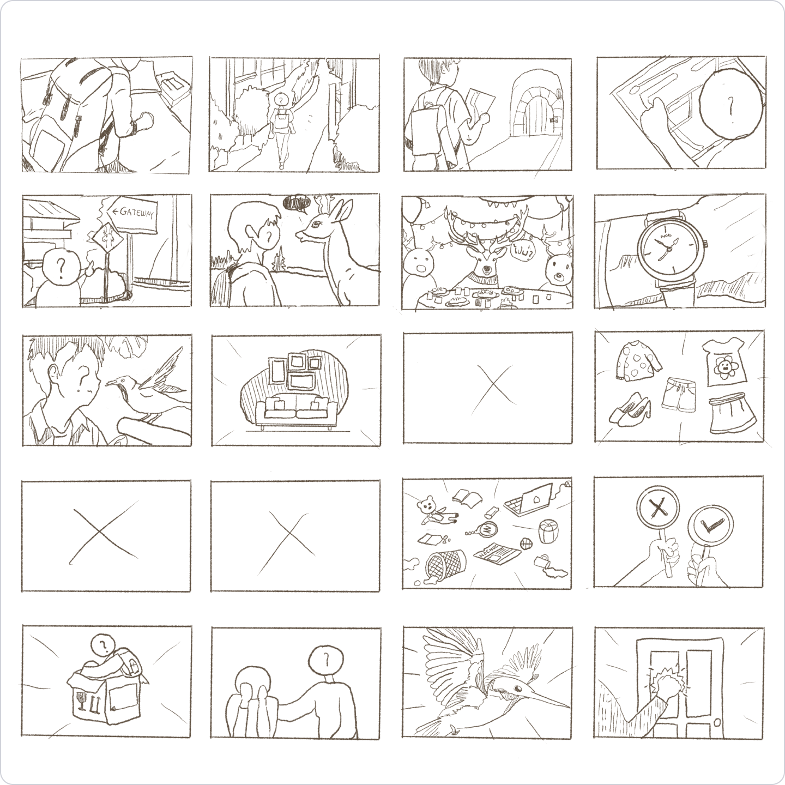
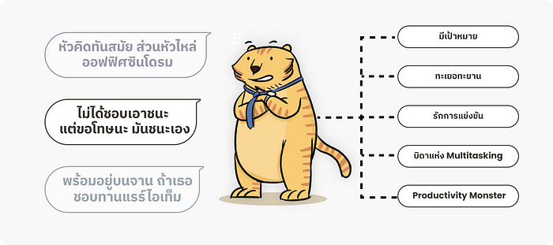
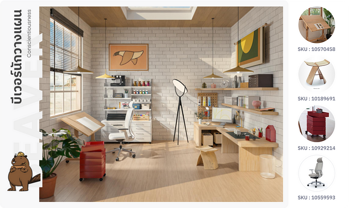
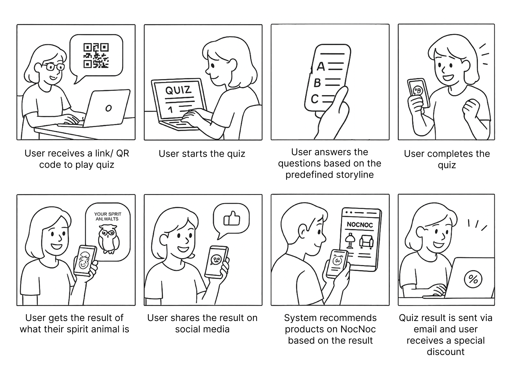
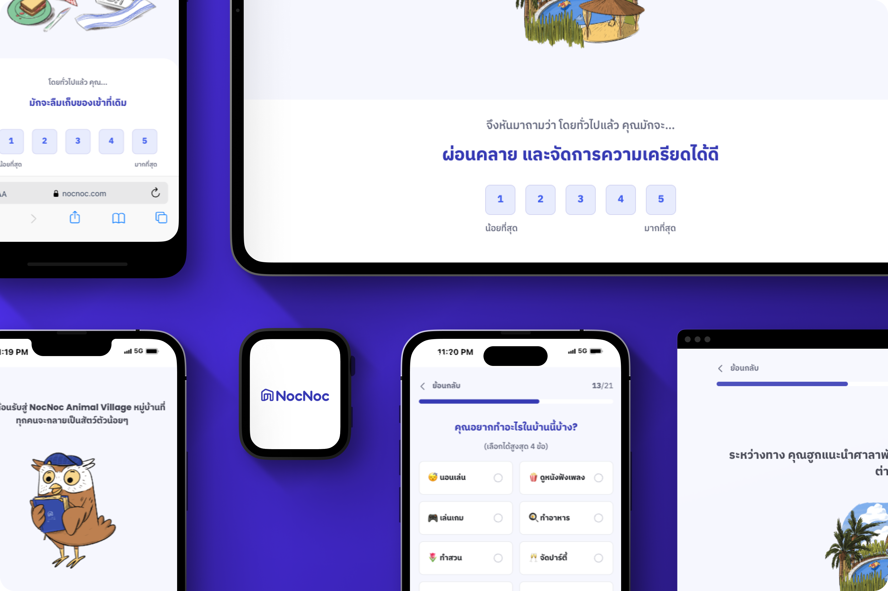

Quiz - Pesonality Test
Find your home style match with NocNoc’s fun and easy Personality Quiz!
Project Overview

The NocNoc Personality Quiz is an interactive tool designed to help users discover their ideal home décor style based on their personality traits. By answering a series of engaging questions, users receive personalized style recommendations and product suggestions from the NocNoc platform. The goal is to create a fun and intuitive experience that bridges personal identity with interior design, enhancing user engagement and driving product discovery.
In this blog, we’ll focus specifically on the UX Research aspect of the project.
For a more detailed breakdown of the entire project process, you can check out our full write-up on Medium.
UX Session

UX Case Study Section: Collaborative Stakeholder Workshops
To ensure alignment across teams and maximize the impact of the NocNoc Quiz project, we conducted a series of 12 structured collaborative workshops with key stakeholders including product owners, designers, marketers, and developers. Each session was designed to build upon the last, enabling us to define, refine, and validate the quiz experience through shared insight and expertise.
Session Breakdown
- Goal & Metrics Definition Established core objectives, key success metrics (engagement, conversion, data capture), timeline, and resource allocation.
- Tone & Persona Alignment Defined the emotional tone of the quiz and mapped out all target personas and their behavior touchpoints.
- Narrative Ideation Co-created the quiz storyline and clarified what the user journey should feel like, including user takeaways.
- Model Research Explored logic and psychological models behind the quiz for accuracy and personality alignment.
- Logic Testing Plan Designed tests with real users to assess whether quiz results reflected actual personalities.
- Story Flow Structuring Planned the narrative arc, character roles, and supporting dialogue or copy.
- Visual Concept Planning Designers and stakeholders collaborated on character design, environments, and quiz result illustrations.
- Narrative Reception Testing Evaluated if the storyline resonated with users and conveyed the intended message.
- UI Design & Developer Handoff Finalized and documented UI components for efficient developer implementation.
- Results Page + UX Validation Designed result presentation logic and tested with users to ensure clarity and delight.
- Product Recommendation Mapping Matched each spirit animal persona with curated product SKUs for relevant recommendations.
- AI-Powered Room Scene Design Planned how AI would visualize recommended items as themed room layouts per persona.

Problems & Solutions
Feedback can come at you from all directions — sudden, intense, and capable of reshaping your entire project. But in reality, it’s a golden opportunity to understand what your users truly want from your quiz. So, in this post, we’d like to share some of the key feedback we received during testing, how we addressed it, and the small delightful details we embedded into the final design.
Feedback: Players wanted to better understand themselves and their quiz results.
What we did:
We introduced personal taglines and short keywords to clearly summarize each character’s personality — simple enough to be understood at a glance.
To deepen personalization, we added a unique “Power Graph” on the result screen, calculated based on each user’s quiz answers. Even if two users received the same character, their graphs would differ, visually reinforcing individual uniqueness.

Feedback: Users wanted to see real room visuals to better imagine their recommended style and feel inspired to decorate their own spaces.
What we did:
We all agreed that visual atmosphere communicates best. So Ball (our lead concept designer) started sketching personalized room styles to match each character’s lifestyle. Then K and Gift from our graphics team transformed these concepts into immersive 3D scenes.
We also expanded the result page to include more in-depth descriptions of the recommended style — helping users see and feel the vibe as clearly as possible.

Feedback: Users wanted to see furniture and decor that matched the style suggested by the quiz.
What we did:
We already planned to embed shoppable products into the room scenes. But we went a step further: now, users can enter their email to receive a curated list of furniture that matches their style.
Plus, we created a dedicated landing page showcasing product recommendations for every character in the quiz. All the inspiration, shopping, and styling — in one place. Super easy for home lovers!

What’s next?
After gathering this valuable feedback, we refined the experience and reached a much more satisfying result. The next step? Bringing everything together into a polished new design, followed by one last round of Usability Testing — before handing it off to our beloved devs for implementation.
Service Design
We want to make the NocNoc Quiz project go viral on social media, primarily through Instagram Stories. The challenge is to create a sense of virality organically, without spending any budget on promotion.
At the same time, we aim to increase brand awareness of NocNoc among users who are already active on social media and naturally inclined to engage with this type of content. These are also the users our team is targeting for data segmentation, so this campaign serves multiple purposes — brand visibility, engagement, and data collection — all in one.
To achieve this, we need to design the service in a way that clearly communicates the user journey, feels intuitive, and minimizes user effort, ensuring it spreads organically while delivering real value to both users and the brand.

UI Concept
The visual identity of the NocNoc Animal Village Quiz was designed to be friendly, inviting, and effortlessly engaging — reflecting both the whimsical nature of the quiz and the warmth of the NocNoc brand.
